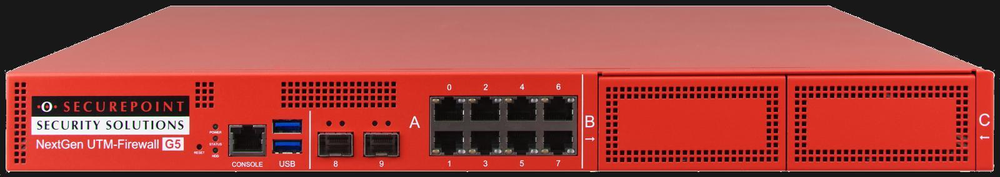

BytesOfProgress
Wiki
Securepoint UTM
Securepoint is primarily focused on the German market, but also has international customers. It is mostly used in European countries, although the international market share is a lot smaller compared to large global providers such as Cisco.
Securepoint offers dedicated hardware appliances that come pre-installed with their UTM software. These devices are designed to be deployed as network gateways (like a router), but providing a ready-to-use solution for comprehensive network protection. They have different options, but they typically look something like this:

Securepoint also provides UTM software that can be installed on compatible hardware or virtualized environments. This allows for more flexibility, as the software can be installed on existing servers or virtual machines, making it useful for various scenarios. It has anti-virus and anti-malware scanning to protect against harmful software, web filtering to block dangerous websites, and email security to protect against spam and phishing attacks.
I decided to include the Securepoint UTMs in the wiki because, in my experience, the software can be a bit fiddly to handle. For in-depth documentation of certain topics, go to the Securepoint Wiki as I will just cover the basics here for a quick start.
Securepoint UTM CLI Cheatsheet
Learn to use the most important commands of the Securepoint UTM's command line interface.
back